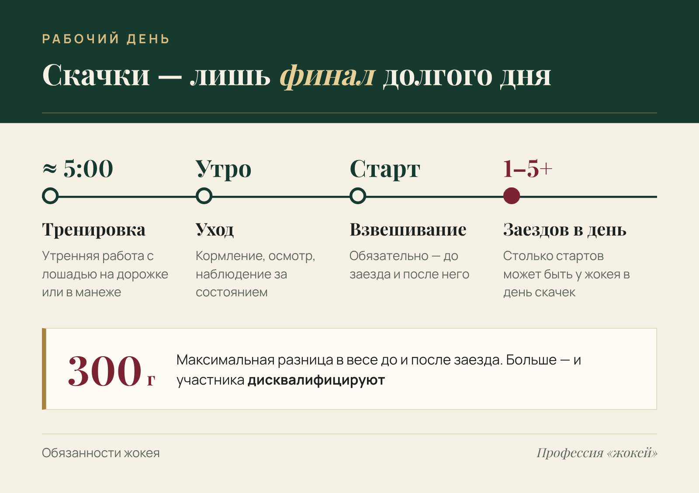
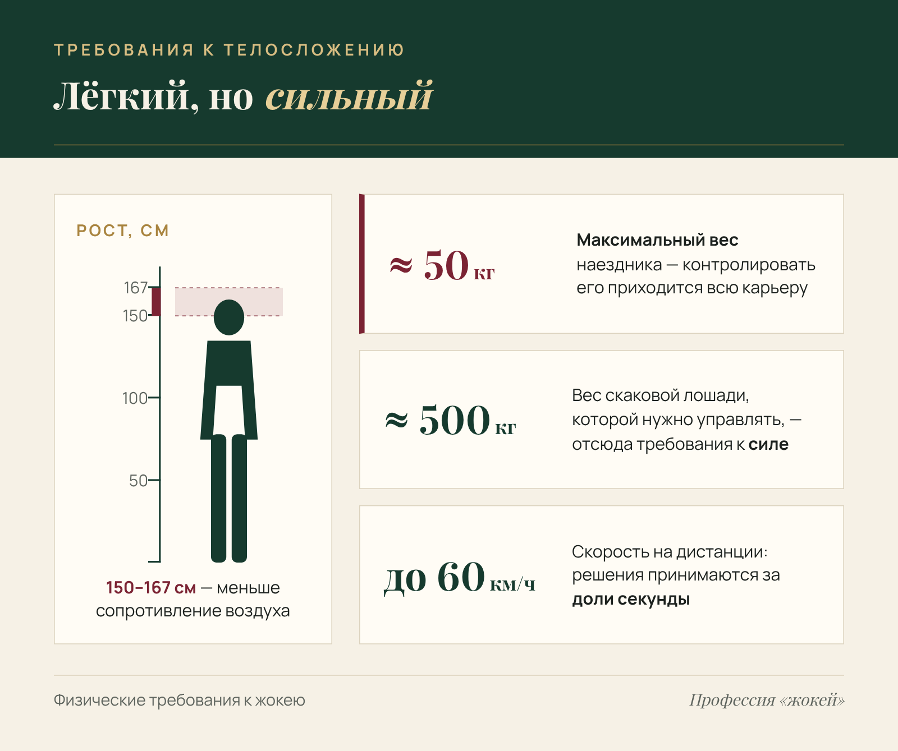
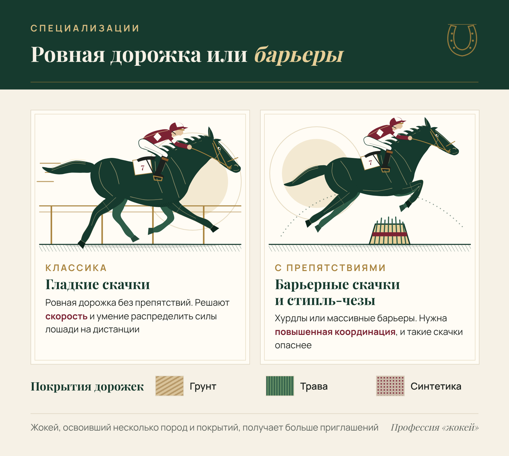
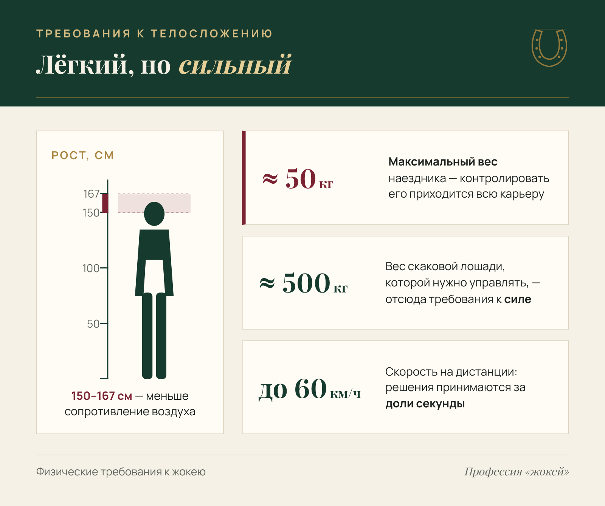
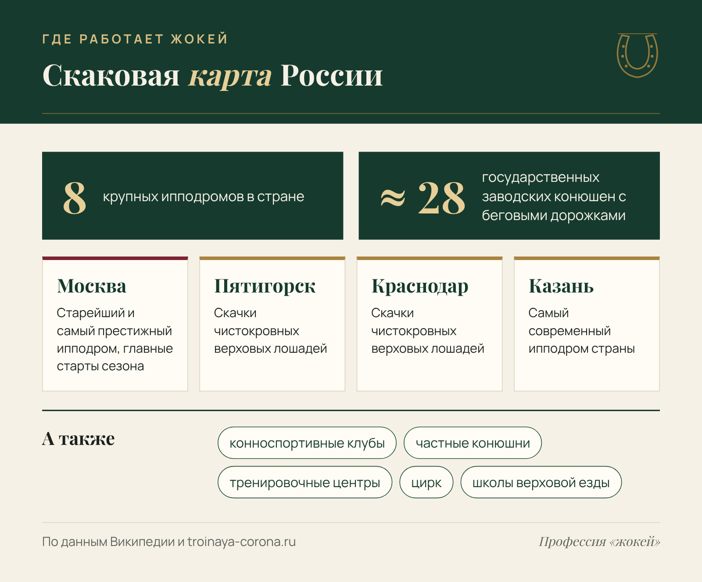
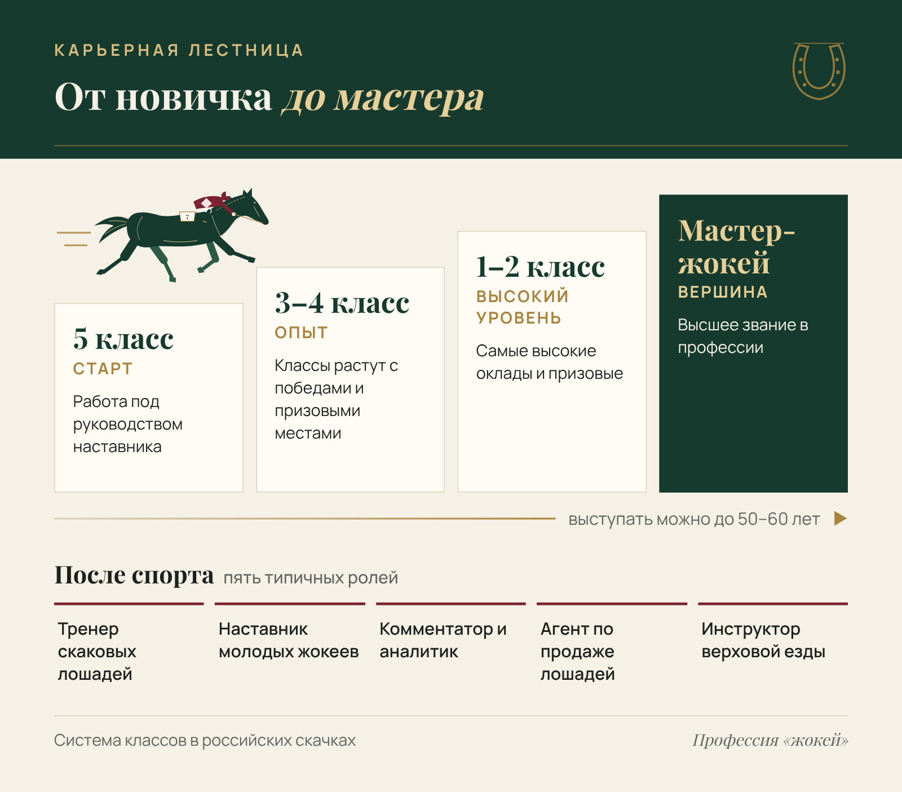
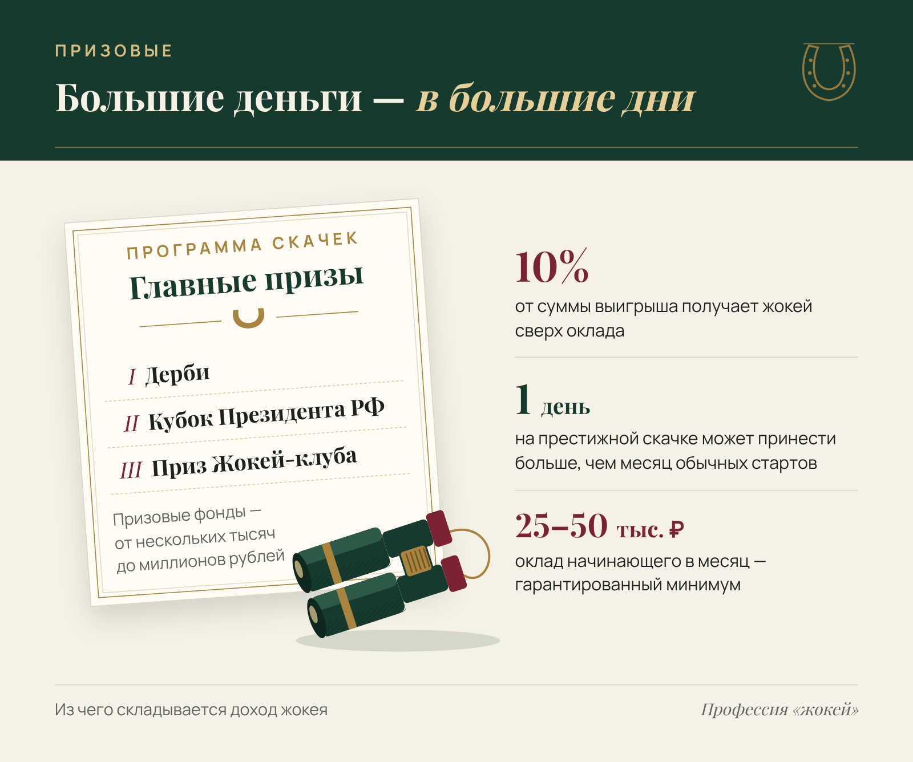

Профессия «жокей» · SEO · B2C
Статья о профессии жокея для широкой аудитории
Профессия «жокей»
Заказчик в портфолио не называется. Статья написана для широкой аудитории: школьников и родителей, которые выбирают профессию, и всех, кто интересуется скачками и конным спортом.
- Площадка
- Сайт заказчика
- Формат
- SEO-статья с таблицей и источниками
- Год
- 2025
Статья для сайта о выборе профессии. О жокеях пишут мало, поэтому собрала в ней ответы на главные вопросы читателя и проверила каждый факт.
Задача
Ответить на вопросы читателя о профессии жокея: требования, обучение, карьера, доход.
Решение
Выстроила структуру по вопросам читателя, подтвердила факты и цифры ссылками на источники.
Результат
Статья в топ-10 Яндекса по запросу «профессия жокей». 62 % читателей дочитывают её до конца.
Профессия «жокей»: требования, обучение, карьера и зарплата
Скачки — один из древнейших видов спорта, и сегодня они по-прежнему собирают тысячи зрителей на ипподромах мира. В центре заезда всегда жокей — профессиональный наездник, который управляет скаковой лошадью. Профессия редкая, требовательная и во многом романтическая.
Разберём, кто может стать жокеем, где этому учат, как устроена карьера и из чего складывается заработок.
Кто такой жокей
Слово «жокей» пришло из английского языка. В XVI веке так называли всех, кто был связан с лошадьми: конюхов, торговцев, бродячих артистов. Позже термин закрепился только за профессиональными наездниками, которые участвуют в скачках.

Сегодня жокей — высококвалифицированный спортсмен: он выступает на ипподромах, участвует в тренировках лошадей и нередко сам готовит их к соревнованиям.
Не только скачки
Многие думают, что работа жокея — это только заезды. На деле наездник работает с лошадью задолго до старта: приучает к седлу, отрабатывает команды, следит за здоровьем животного. Роли в команде распределены так:
- тренер — стратег: выстраивает план подготовки скакуна;
- жокей — тактик: чувствует каждое движение лошади и мгновенно принимает решения на дистанции.
Результат в заезде зависит от обоих: даже точный план тренера не сработает, если наездник не почувствует лошадь на дорожке.
Рабочий день
День жокея начинается около пяти утра: тренировки, кормление, наблюдение за состоянием лошади. Так выглядит подготовка к любому соревнованию. В день скачек наездник может участвовать и в одном заезде, и в пяти, и больше.
Перед стартом жокея обязательно взвешивают. Вес до и после заезда не должен расходиться больше чем на 300 граммов — иначе участника дисквалифицируют.

Из этого распорядка понятно, почему профессию сложно совмещать с чем-то ещё: подготовка лошади идёт каждый день, а соревнования — лишь видимая часть работы.
Плюсы и минусы профессии
Работа на свежем воздухе, общение с умными животными, поездки между ипподромами — всё это приводит в профессию энтузиастов. Но прежде чем выбирать её, стоит трезво оценить обе стороны.
Что привлекает:
- Работа на открытом воздухе — большая часть дня проходит на ипподроме или в манеже.
- Эмоциональная отдача — победы приносят яркие впечатления и признание.
- Возможность хорошо зарабатывать — жокей получает процент от призовых.
- Долгая карьера — при хорошем здоровье выступать можно до 50–60 лет.
С чем придётся смириться:
- Высокий травматизм — падения на скорости случаются даже у опытных наездников.
- Нестабильный доход — он напрямую зависит от результатов.
- Постоянный контроль веса — многие соблюдают строгую диету всю карьеру.
- Нагрузка на психику — решения приходится принимать за доли секунды и в плотной борьбе.
Минусы перевешивают не для всех: тем, кто любит лошадей и готов к режиму, профессия многое возвращает.
Специализации
В скаковом спорте несколько направлений, и жокей обычно специализируется на одном-двух из них. Главное различие между ними — есть ли на дистанции препятствия.

От формата зависит, что жокей тренирует в первую очередь: на ровной дорожке важнее скорость и расчёт сил, на дистанции с барьерами — координация и готовность к риску. Коротко различия выглядят так.
| Направление | Что это | Что важно для жокея |
|---|---|---|
| Гладкие скачки | Классический формат: ровная дорожка без препятствий | Скорость и умение распределить силы лошади на дистанции |
| Барьерные скачки и стипль-чезы | Заезды с препятствиями — хурдлами или массивными барьерами | Повышенная координация; такие скачки опаснее |
Отдельное умение — работа с разными породами и покрытиями. Чистокровные верховые лошади по темпераменту отличаются от арабских скакунов и русских рысаков. Жокей, который уверенно выступает на разных породах и дорожках (грунт, трава, синтетика), получает больше приглашений. Некоторые наездники уходят в смежные области: тренируют молодых лошадей, работают на аукционах или выступают в цирке.
Каким должен быть жокей
Жокей — одна из немногих профессий с жёсткими требованиями к телосложению. Максимально допустимый вес наездника — около 50 килограммов. При этом он должен быть сильным и выносливым: управлять лошадью весом около полутонны на скорости до 60 км/ч без серьёзной физической подготовки невозможно.
Оптимальный рост — от 150 до 167 сантиметров. Дело не только в весе, но и в аэродинамике: невысокий наездник создаёт меньшее сопротивление воздуху, а на финише это преимущество.

Физические данные — только половина дела. Профессионала от любителя отличает умение чувствовать лошадь, мгновенно принимать решения и сохранять хладнокровие, когда рядом падает соперник.
Ключевые качества успешного жокея:
- отличная координация и быстрая реакция;
- выносливость и сила при небольшом весе;
- знание психологии и физиологии лошадей;
- стрессоустойчивость и готовность к жёсткой конкуренции;
- дисциплина в питании и тренировках.
К этому списку всё чаще добавляются коммуникативные навыки. За рубежом жокей нередко представляет лошадей перед продажей, общается с журналистами, ведёт социальные сети. Чем убедительнее он подаёт себя и своего подопечного, тем больше предложений получает от владельцев скакунов.
Где учиться
Одной любви к лошадям недостаточно — нужна системная подготовка. Старейшее учебное заведение в России — Хреновская школа наездников в Воронежской области, основанная в 1882 году графом И. А. Воронцовым-Дашковым.
Здесь готовят по профессии 36.01.03 «Тренер-наездник лошадей» с присвоением квалификаций жокея, наездника и тренера. На базе 9 классов обучение длится 2 года 10 месяцев.
Программа включает теорию и практику:
- теория — анатомия и физиология лошадей, кормление и содержание, биомеханика движения, особенности пород;
- практика — сначала занятия на тренажёрах, затем работа с живыми лошадьми.
Выпускники получают удостоверение установленного образца и право работать по профессии.
Жокейские школы есть также в Краснодарском крае и на Кавказе, где традиционно развито коневодство. Другой путь — учиться прямо на ипподроме у опытного наставника: многие известные жокеи начинали помощниками на конюшне.
Где работать
Основное место работы жокея — ипподром. В России 8 крупных ипподромов и около 28 государственных заводских конюшен с беговыми дорожками. У каждой крупной площадки своя роль:
- Центральный Московский ипподром — старейший и самый престижный, здесь проходят главные соревнования сезона;
- Пятигорский и Краснодарский — специализируются на скачках чистокровных верховых лошадей;
- Казанский — считается самым современным в стране.
Помимо ипподромов жокеи востребованы в конноспортивных клубах, частных конюшнях и тренировочных центрах. Цирк ценит наездников, способных выполнять сложные акробатические номера, а школы верховой езды приглашают опытных жокеев инструкторами.

Для многих эти места становятся продолжением пути после ухода из большого спорта: опыт жокея ценят везде, где нужно понимать лошадь и уверенно держаться в седле.
Сколько зарабатывает жокей
Доход жокея складывается из двух частей: фиксированного оклада и процента от призовых. Начинающие получают ежемесячно 25 000–50 000 рублей. К нему добавляются стандартные 10% от суммы выигрыша. Поэтому итоговый заработок напрямую зависит от результатов: чем больше побед, тем выше доход.
Призовые фонды на российских ипподромах — от нескольких тысяч до миллионов рублей. На престижных скачках — Дерби, Кубке Президента РФ, Призе Жокей-клуба — успешный жокей может за один день заработать больше, чем за месяц обычных стартов.
Ориентировочные диапазоны дохода в зависимости от квалификации:
| Квалификация | Оклад, руб./мес. | Доход с призовыми, руб./мес. |
|---|---|---|
| Начинающий (5 класс) | 25 000–50 000 | до 60 000 |
| Опытный (3–4 класс) | 40 000–70 000 | 80 000–150 000 |
| Высший уровень (1–2 класс, мастер-жокей) | 50 000–100 000 | 200 000–500 000 и выше |
Цифры условные: реальный доход зависит от ипподрома, сезона и того, на каких лошадях выступает жокей. Стабильный оклад гарантирует минимум, а всё, что сверху, приходится выигрывать.
За рубежом призовые несопоставимо выше. По данным газеты «Труд», в США жокей за призовое место на крупных соревнованиях получает 100 000–500 000 долларов. Американских жокеев к тому же защищают профессиональные ассоциации: они обеспечивают страховку и поддержку после завершения карьеры.
Как растёт карьера
Карьера жокея развивается поэтапно, по системе классов. Новичок получает 5 класс и работает под руководством наставника. По мере побед и призовых мест ему присваивают более высокие классы — вплоть до звания мастер-жокея.

Выступать можно до 50–60 лет, если позволяют здоровье и форма. Но многие завершают карьеру раньше и уходят в смежные области.
Куда чаще всего уходят после спорта:
- Тренер скаковых лошадей — готовит молодняк и действующих скакунов к соревнованиям.
- Наставник начинающих жокеев — передаёт опыт молодому поколению на ипподроме.
- Комментатор и аналитик скачек — работает на телевидении, радио или в специализированных СМИ.
- Агент по продаже лошадей — консультирует покупателей, представляет скакунов на аукционах.
- Инструктор верховой езды — обучает любителей и начинающих спортсменов.
Жокеев с хорошей репутацией приглашают выступать за рубежом. Это открывает доступ к более высоким призовым фондам и международному признанию.
Перспективы профессии
Скаковая индустрия в России переживает непростой период: по числу действующих ипподромов страна уступает большинству европейских государств. Уязвимость отрасли наглядно показало закрытие Ростовского ипподрома в ноябре 2025 года. Тем не менее интерес к скачкам сохраняется: существующие площадки модернизируются, открываются тренировочные центры, растёт число частных коневладельцев.
По оценке «Труда», в России не больше 100 действующих профессиональных жокеев, и по-настоящему успешных среди них — около 30. Конкуренция на вершине высокая, но новичку есть куда расти.
Дефицит кадров открывает возможности для тех, кто только начинает. При хорошей подготовке и готовности много работать жокей может за несколько лет выйти на стабильный доход и заслужить признание в профессиональном сообществе.

Развитие профессии связано и с соседними направлениями — конным туризмом, иппотерапией, спортивным коневодством. Конный спорт набирает популярность среди обеспеченной аудитории, а значит, растёт спрос на квалифицированных специалистов. Тот, кто готов посвятить профессии жизнь и принять все её ограничения, без работы не останется.
Источники
Статья опирается на открытые источники:
- Википедия. Жокей — ru.wikipedia.org/wiki/Жокей
- Профессия жокей: описание, зарплата — postupi.online
- Жокей — кто это? Обзор профессии — kedu.ru
- Правда о профессии жокея — trud.ru
- Хреновская школа наездников — naezdnik.vrn.ru
- Российские ипподромы — troinaya-corona.ru
- Ростовский ипподром — znanierussia.ru